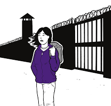
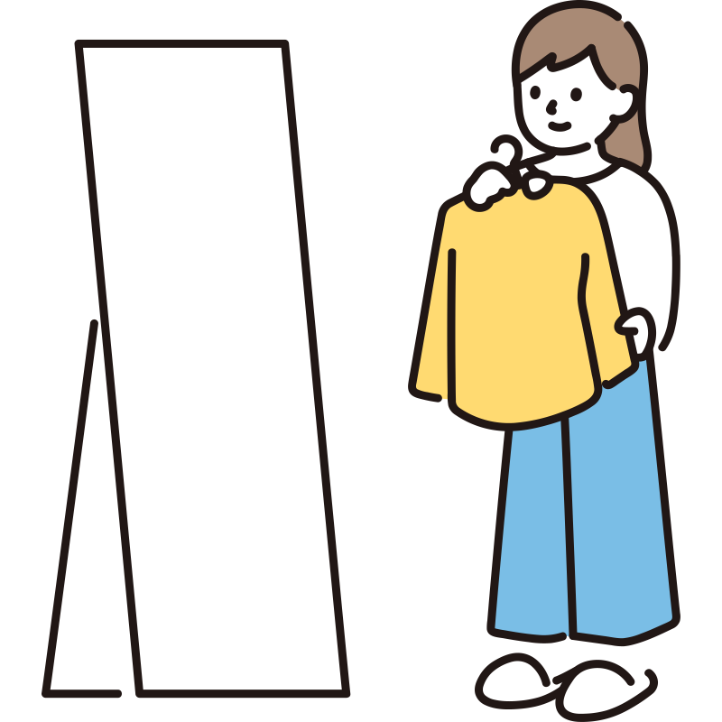
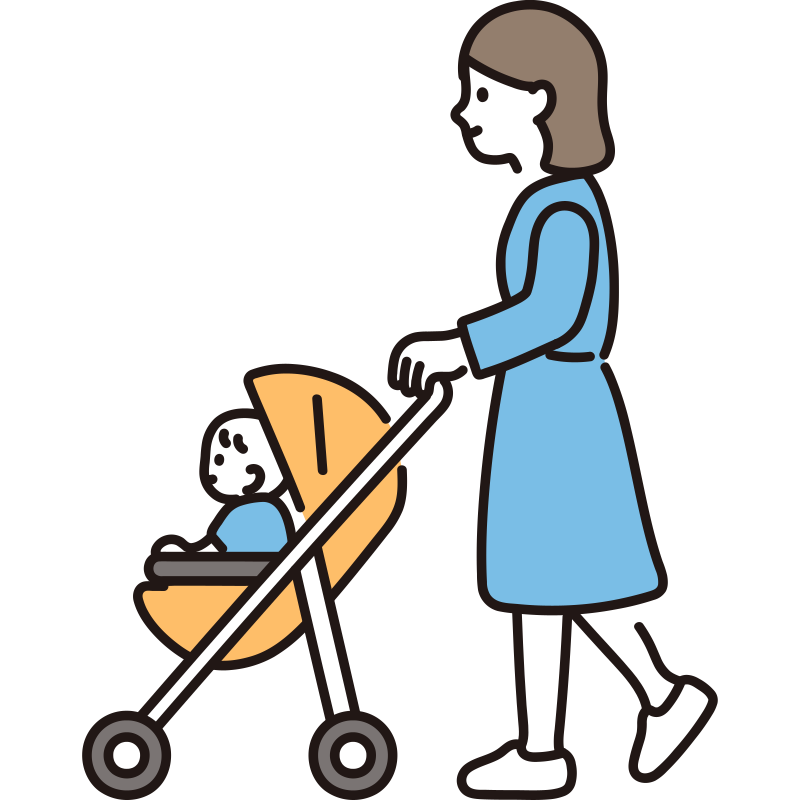

მსჯავრდებულ ქალთა რესოციალიზაციის ცენტრი არის სასიცოცხლოდ მნიშვნელოვანი დაწესებულება,რომელიც ეძღვნება ციხეში მყოფი ქალების რეაბილიტაციასა და რეინტეგრაციას.ეს არის იმედისა და მხარდაჭერის შუქურა მათთვის,ვინც ცდილობს საკუთარი ცხოვრების აღდგენას პატიმრობის შემდეგ. ცენტრი ფუნქციონირებს მკაფიო მისიით, უზრუნველყოს მსჯავრდებული ქალები ყოვლისმომცველი რესურსებით , რაც მათ საშუალებას მისცემს იცხოვრონ სრულფასოვანი ცხოვრებით გათავისუფლების შემდეგ. ორგანიზაცია ქმნის ისეთ გარემოს, სადაც თითოეულ ინდივიდს, განურჩევლად წარსული შეცდომებისა, აქვს გამოსყიდვისა და ახალი ცხოვრების დაწყების შესაძლებლობა.
სერვისები
კონსულტაცია და თერაპია
ცენტრი გთავაზობთ ფსიქოლოგიურ კონსულტაციას და თერაპიის სესიებს, რომლებიც მორგებულია პატიმრობაში მყოფი ქალების უნიკალურ საჭიროებებზე.

პროფესიული სწავლება
ცენტრი ახორციელებს პროფესიული გადამზადების პროგრამებს ღირებული უნარების გასავითარებლად.
რეინტეგრაციის მხარდაჭერა
ცენტრი სთავაზობს დამხმარე სერვისებს ქალებს, საცხოვრებლის პოვნაში, ჯანდაცვაზე წვდომაში , ოჯახთან და დამხმარე ქსელებთან ხელახლა დაკავშირებაში.

დასაქმების ხელშეწყობა
ცენტრი უზრუნველყობს დასაქმების ხელშეწყობას,რომელიც მოიცავს სფეროების ფართო სპექტრს, მათ შორის კომპიუტერულ ცოდნას, კულინარიულ ხელოვნებას.

.svg)
.svg)


შემოთავაზებულმა პროგრამამ ჩემს ცხოვრებას განვითარების შანსი მისცა ,ბედნიერი ვარ ,რომ ამ დიდი ოჯახის ნაწილი გავხდი და ჩემი მომავალი გადავარჩინე .გირჩევთ თქვენც ანდოთ თქვენი ცხოვრება პროფესიონალებს და გახდეთ ამ დიდი ოჯახის წევრები. (ქალბატონი - ნ.ს.)
ყოველთვის ვოცნებობდი ჩემი ხელით შემექმნა სამოსი და მეტარებინა .ამ პროგრამამ საშუალება მომცა გამევლო ჭრა-კერვის კურსი და ჩემი ოცნება ამესრულებინა .(ქალბატონი - ა.ხ.)
ცხოვრებისეული განაჩენის შემდეგ ,წარმოუდგენლად მიმაჩნდა მეცხოვრა სრულყოფილი ცხოვრებით ,მყოლოდა ოჯახი, შვილები ,თუმცა საზოგადოებაში გავრცელებული სტერეოტიპები მაბრკოლებდა და საკუთარი თავის რწმენას მიქარწყლებდა . გასაჭირის ჭამს გადავწყვიტე მიმეღო ამ ორგანიზაციის მიერ შემოთავაზებული სერვისები და ჩემი თავი გამეძლიერებინა .ალბათ , ეს იყო ჩემი ცხოვრების საუკეთესო გადაწყვეტილება.მადლობა მათ ამისთვის.(ქალბატონი - მ . ნ .)
